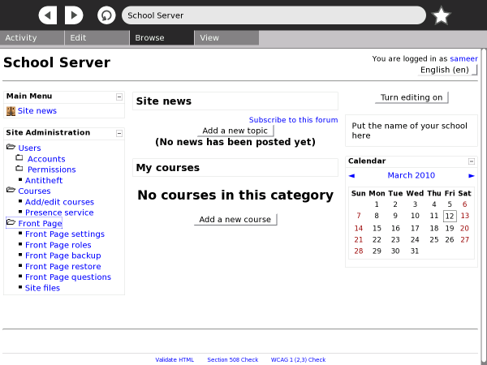

XS school server¶
Overview¶
The XO school Server, or XS, is one of the products of the OLPC project, designed to complement the XO laptop. The XS is installed on x86 (Intel-compatible) computers. These could be conventional servers such as rack-mounted computers, purpose-built low-power machines, or even netbooks.
The OLPC XS provides additional infrastructure extending the capabilities of the laptops. While the laptops are self-sufficient for many learning activities, other activities and services depend on the XS providing connectivity, shared resources and services. The XS provides XO machines with network connectivity for backups, anti-theft leases, web browsing, system, content updates, and asynchronous collaboration tools such as Moodle.
Installation¶
Two installation options are available:
XS installation CD (recommended): download and burn a CD image, and use the resultant CD to install the system. See details at http://wiki.laptop.org/go/XS_Installing_Software_0.7#Installing_from_CD
On top of another system (advanced): install the XS software packages on top of an existing operating system installation. See details at http://wiki.laptop.org/go/XS_Installing_Software_0.7#Installing_on_top_of_existing_OS_installation
The installation is fairly straight forward and requires minimal configuration after the initial installation to the XS hard drive.
Configuration¶
Configuring the XS involves choosing a server domain name. The hostname is always ‘schoolserver’. So, using a domain name like example.org will give you schoolserver.example.org.
The XS has a fairly standard server-style networking setup. The XS provides DHCP and DNS services to all the XOs connected to it via a wireless access point. However, if the school already has its own network running its own DHCP services, the XS networking can be modified to work with the existing infrastructure. The XS can work with two Ethernet cards, where one works as a WAN interface, while the other works as the LAN interface. The XS can also work with a single Ethernet card where it works as a LAN interface for schools without WAN (Internet) connectivity. Optionally, such a server can provide WAN connectivity using a USB-to-Ethernet adapter.
Services¶
Collaboration¶
The XS provides collaboration services across a variety of activities. When XOs are connected to the School Server, the collaboration is managed through the server and can be segmented by a classroom or a group. While the user will not see anything different, the capacity of collaboration will scale up considerably with a XS in the mix.
Caching¶
The XS uses Squid to cache content locally. At sites where Internet access is limited, slow or expensive, content caching helps in speeding up access to content by making copies on the XS and serving these up locally.
Backup and Restore¶
The XS provides seamless backup services for each registered XO. The XS checks to see the backup status of the Journal on each XO and backs it up incrementally. Once the backups are made, these can be used to restore a child’s work back on her XO.
Antitheft Controls¶
Antitheft controls lists all registered XOs in one location. additionally, this feature offers rescue leases to laptops to re-activate laptops in case of problems. If a laptop gets stolen, the antitheft control feature shuts it down.
Learning Management System¶
Moodle is a Learning Management System that provides the teacher with a way to create a course, manage assignments and administer assessment using a web-based interface. On the XO, the Moodle LMS is accessible via the Browse activity. Moodle features include assignment submission, discussion forums, file downloads, grade books, instant messages, calendars, news, announcements, quizzes and wiki.
